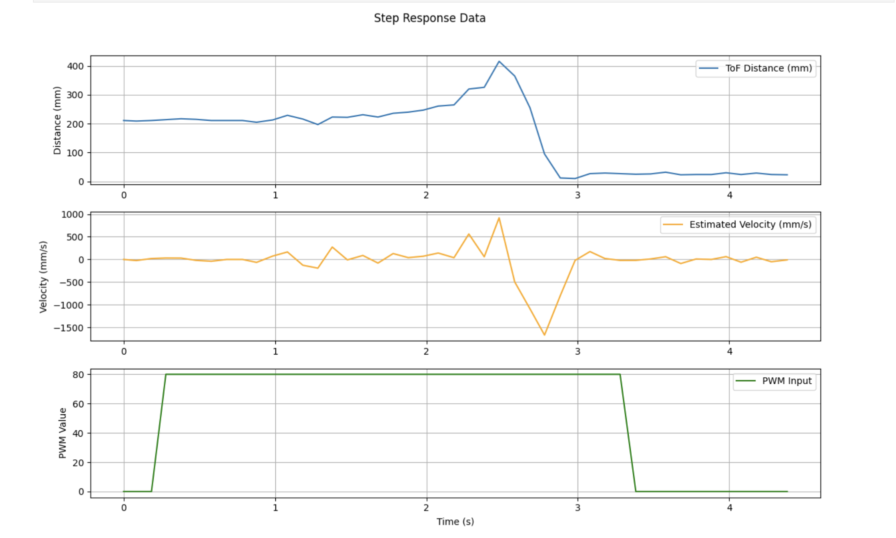
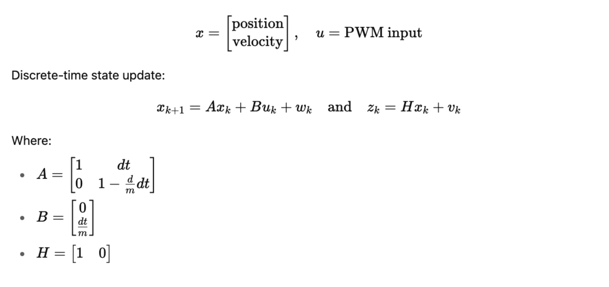
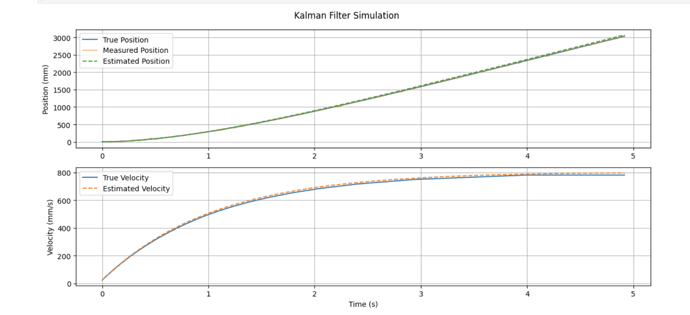
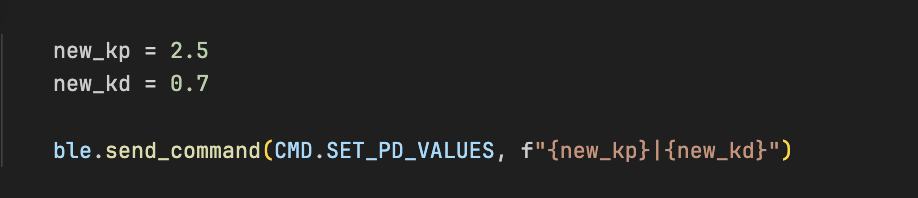
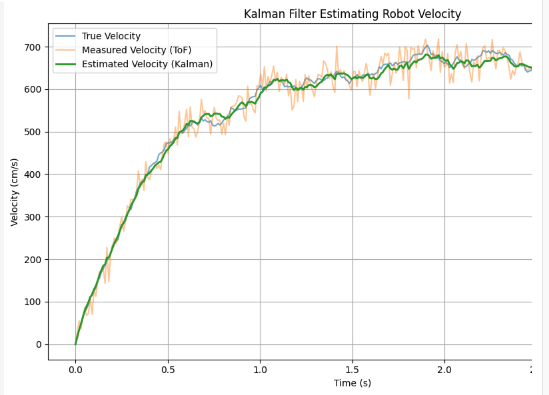

Lab 7: Kalman Filter for Distance Estimation
Objective
The goal of this lab was to implement a Kalman Filter on the Artemis board to estimate the robot's velocity and position in real time using a Time-of-Flight (ToF) sensor. I aimed to command the robot to move toward a wall and stop at a target distance using a PD controller, relying solely on sensor feedback and onboard estimation.
Step 1: Step Response Implementation on Arduino
To analyze the robot’s dynamic response to a step input, I implemented a step_response() function that commands the motors to apply a step PWM input of 100 while logging ToF-based distance measurements and computing velocity. This allowed me to characterize how the robot accelerates and moves in response to a known control input.
Boolean Flag Control
To trigger and stop the step response routine over BLE, I introduced a is_step_response flag to toggle logging based on BLE commands.
The START_STEP command sets it to true, and STOP_STEP resets it along with other logging variables.
This approach makes it easy to run the experiment on demand without needing to reflash the board.
(i)Step Response Control Routine
The step_response_control() function executes the experiment in three phases: an idle phase (0 PWM), an active phase (100 PWM for 3s), and a final stop phase (0 PWM again). This structure captures the full acceleration-deceleration profile.

(ii)Step Response Logging Function
Inside step_response(), I drove motors at a constant PWM in a straight line towards a pillowed wall, read ToF distance measurements and then
logged time, PWM, distance, and velocity to arrays.
This structure ensures that the robot's full response curve — from rest to steady-state — is well logged.
(iii)Step Response Data Collection via BLE
To trigger logging data from the robot, I implemeted three BLE commands. START_STEP, STOP_STEP which get's automatically
triggered by the is_step_response flag and a COLLECT_DATA to receive all data samples (Distance, Velocity and PWM for plotting)
Each BLE packet contained time|pwm|distance|velocity which was parsed and stored.
Step 2: Estimating Momentum and Drag
To tune the Kalman filter model, I needed to estimate the robot's mass-like parameter (momentum term m) and its damping resistance to motion (drag d). I assumed a first-order model of the form:
v̇(t) = 1mu - dmv(t)
Solving this differential equation gives an exponential velocity curve:
Where:
-
v_ss = ud is the steady-state velocity and
τ = md is the time constant.
Find Steady-State Velocity and time constant
From the velocity plot, I identified a region where the velocity plateaued — between 2.5s and 3.0s. This gave us the estimated steady-state velocity:
To estimate the time constant τ, I first computed the time t0.9 when the velocity first reached 90% of the steady-state velocity. This tells us how fast the robot approaches its final velocity.
I found:
For a first-order exponential system:
Solving for Drag (d) and Momentum (m)
Using the standard model:
With values:
- u = 100 (PWM input), vss = 552.92 mm/s and τ = 0.687 s
d = 100 / 552.92 # ≈ 0.1809
m = 0.687 * d # ≈ 0.1245 These parameters were then used in the Kalman filter matrices for real-time estimation and control.
Step 3: Offline Kalman Filter Simulation
Using the calculated d and m values, I modeled the robot’s dynamics and built a simulation of the Kalman filter in Python. The idea was to confirm that our estimator could track position and velocity closely even with noisy measurements — before deploying it live on the robot.
System Model
I modeled the robot as a second-order linear system where:

I plotted two key components (i) Position - True vs Measured (with noise) vs Estimated (Kalman filter) and (ii) Velocity - True vs Estimated
The result showed that our Kalman filter effectively smoothed the position and velocity, matching the underlying motion even in the presence of measurement noise. Our simulated Kalman filter tracked both position and velocity with high fidelity. This gave me confidence to move forward and deploy the estimator on my Artemis board. I therefore used the exact same matrices A, B, H, Q, and R in my Arduino code.
Step 4: Real-Time Kalman Filter on Robot
After validating the filter offline, I then went ahead to implement it on my robot car and used it for real-time state estimation onboard the robot.
I did this with the use of two functions , kalman_update() which contained the filter logic implementation which would get triggered inside drive_until_target() whenever new sensor data was available.
y = z_meas - (H[0]*x_pred[0] + H[1]*x_pred[1]);
K[0] = ...; // Kalman Gain
x_est[0] = x_pred[0] + K[0]*y;
x_est[1] = x_pred[1] + K[1]*y;
PD Controller for Target-Based Driving
I also implemented a Proportional-Derivative (PD) controller that uses the Kalman filter estimates to compute motor PWM values. The controller helps the robot slow down as it approaches a predefined target distance (30 cm) and stop smoothly. I added a new command that allowed me to tune the controller remotely via BLE without having to burn arduino code everytime saving me a huge amount of time. I settled on kp of 2.5 and kd of 0.7.
This PD controller ensures that, te robot speeds up when far from the wall, decelerates as it nears the target, and halts automatically when the distance error or PWM falls below the set threshold.
Boolean is_kalman_drive
To control when the Kalman filter-based driving was active, I added a flag is_kalman_drive that gets set via BLE command. This flag ensures the filter and controller only run when explicitly requested,
and automatically stops the robot when reaching the target distance.
When this flag is set to true, the robot uses its Kalman filter estimates to drive towards the target. When false, or when the target is reached, the robot stops and the filter resets.
On the Python side, I used a BLE notification handler to collect this stream of position and velocity estimates over time. I logged timestamps and plotted both estimated position and estimated velocity to evaluate the Kalman filter’s live performance.
This result demonstrates that the Kalman filter estimates velocity in real time with high accuracy, even as the robot slows down before reaching the target distance.
Conclusion
Lab 7 was an exciting opportunity to bring a Kalman filter to life on a real robot. By estimating the robot’s velocity and position in real time, I was able to enhance the raw ToF sensor data and improve overall motion control. Beyond just implementation, this lab deepened my understanding of how Kalman filters work and why they’re so powerful for robotics and sensor fusion.
[1] Huge thanks to Stephan Wagner (2024) for the inspiration and helpful documentation throughout this process.